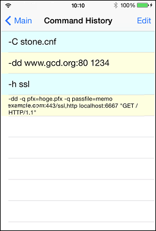
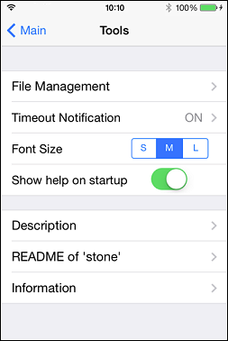
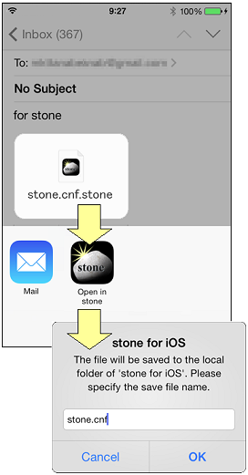

Description
'stone for iOS' is a GUI application to execute the open source multi-functional packet repeater 'stone' developed by Hiroaki Sengoku.
(1) Main View

Specify stone parameters on the text field above. See [Tools Menu - README] for syntax details.
Button functions
- [Run] - Execute stone
- [Stop] - Close this application
- [Clear] - Clear log messages
- [History] - Display command history
- Tools Button - Display Tools Menu
"-dd www.gcd.org:80 1234"
The default parameter above is an example for testing. Please open http://[IP Address of this device]:1234/ in a web browser after you execute stone. The browser will show contents of http://www.gcd.org/ (stone official site).
(2) Command History View

The history list of the stone command parameters. Tap an item to paste the text to the command field in Main View. Each item can be deleted or sorted by "Edit".
(3) Tools Menu

Configuration & Description. Please see each page for details.
(4) Saving Local Files
You can copy files to the local folder of this app by tapping the file named "*.stone" on the other applications, such as Mailer. The local files can be specified in the stone parameter.
e.g. "-C stone.cnf"

* The current version of stone for iOS does not support importing certificates into the iOS keychain. You can use the certificate as a local file.
This software uses existing Open Source Software resources below. We are so grateful to every person who has published these great software.
stone
Copyright (c) 1995-2014 by Hiroaki Sengoku
"All rights about this program ``stone'' are reserved by the original author, Hiroaki Sengoku. The program is free software; you can redistribute it and/or modify it under the terms of the GNU General Public License (GPL). Furthermore you can link it with openssl."
"This program is distributed in the hope that it will be useful, but WITHOUT ANY WARRANTY."
OpenSSL
Copyright (c) 1998-2011 The OpenSSL Project. All rights reserved.
"This product includes software developed by the OpenSSL Project for use in the OpenSSL Toolkit. (http://www.openssl.org/)"
"THIS SOFTWARE IS PROVIDED BY THE OpenSSL PROJECT ``AS IS'' AND ANY EXPRESSED OR IMPLIED WARRANTIES, INCLUDING, BUT NOT LIMITED TO, THE IMPLIED WARRANTIES OF MERCHANTABILITY AND FITNESS FOR A PARTICULAR PURPOSE ARE DISCLAIMED. IN NO EVENT SHALL THE OpenSSL PROJECT OR ITS CONTRIBUTORS BE LIABLE FOR ANY DIRECT, INDIRECT, INCIDENTAL, SPECIAL, EXEMPLARY, OR CONSEQUENTIAL DAMAGES (INCLUDING, BUT NOT LIMITED TO, PROCUREMENT OF SUBSTITUTE GOODS OR SERVICES; LOSS OF USE, DATA, OR PROFITS; OR BUSINESS INTERRUPTION) HOWEVER CAUSED AND ON ANY THEORY OF LIABILITY, WHETHER IN CONTRACT, STRICT LIABILITY, OR TORT (INCLUDING NEGLIGENCE OR OTHERWISE) ARISING IN ANY WAY OUT OF THE USE OF THIS SOFTWARE, EVEN IF ADVISED OF THE POSSIBILITY OF SUCH DAMAGE."
"This product includes cryptographic software written by Eric Young (eay@cryptsoft.com). This product includes software written by Tim Hudson (tjh@cryptsoft.com)."
'stone for iOS' is an open source software. The source code of this software is available at https://github.com/mkttanabe/stone-for-iOS . 'stone for iOS' is licensed under GPL.
Copyright (C) 2014 KLab Inc.
written by TANABE Makoto <mkttanabe2012@gmail.com>